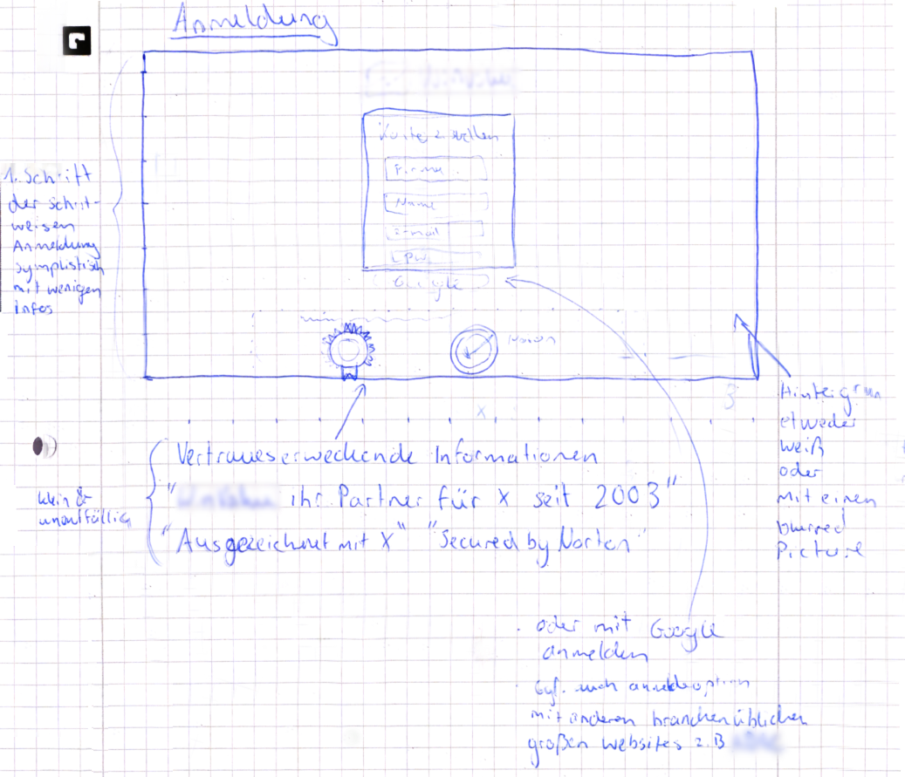
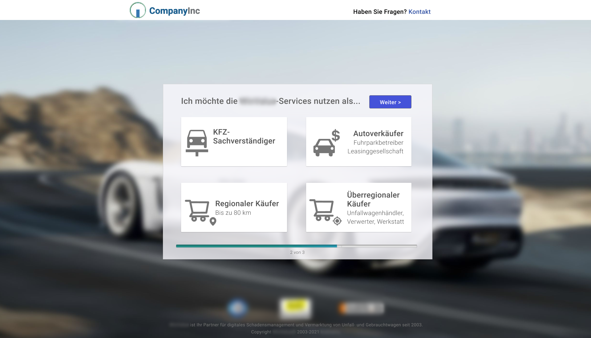

Redesigning a Signup Page
When I was assigned the task of redesigning the registration page, it was important to me that the new design is modern and at the same time looks very professional and trustworthy. This was because users are not likely to register at websites when they perceive the overall appearance of the website to be unprofessional.
The first draft of this registration process was made as a paper prototype and then translated into an interactive Figma design. After the Figma design was presented to the company and more feedback was gathered, the final product was implemented in HTML and CSS.
To increase the perceived ease of use, the process was split into three steps. Each of these steps only required little user input. Not too much information is requested on one screen. In the first step, users only give their name and email address.

Afterward, customers can choose for what purpose they intend to use the services. Previously, users had to create separate accounts for the different services that the company provides. This process was automated to relieve users from these tasks.
Finally, the users have to verify their email address. Information that customers do not like to provide is requested after the registration. The website can be used, but most important functions are disabled until payment information is given by the user. This way, we expect to convince the user of the quality of the services while offering him or her a sneak peek into the functions of the websites. It can be assumed that the users are more likely to complete their account registration once they have already taken the initial steps. By applying this Foot-in-the-door technique we worked around one of the aspects of the account registration process that users find most off-putting, which is providing payment information.